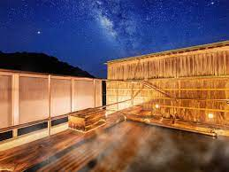

榊原温泉

榊原温泉の歴史
榊原温泉は、伊勢の地の入口にあったことから、伊勢神宮参拝に来られた親王が
”湯ごり（身を清める）”をされたという歴史をもち、また、平安の才女・清少納言が
「枕草子」で”湯は七栗の湯”＜当時の呼び名＞と称えており、
出雲の神を温泉の守り神として祀っていることもあって、恋の和歌も多く残っています。
このように、宮中や神宮にゆかりも深く、つるつるスベスベの肌ざわりの良い泉質は
心身の癒しに効き目があり、平安時代から都人にも知られた”パワースポット・恋の湯治場”でありました。
源泉掛け流し風呂「まろみ湯」の魅力
無色透明な榊原温泉の源泉は、美肌効果の高いアルカリ性単純泉。肌本来の力を引き出し、健やかな肌へと導くことから、日本屈指の「美肌の湯」として知られています。中でも当館が誇るまろみの湯 「源泉かけ流し風呂」はまるで天然の美容液。何度も浸かることで、くすみやざらつきなど肌トラブルを改善し、体の中から輝くようなハリ・ツヤのある肌を生み出します。新鮮な自家源泉を「かけ流し」で堪能できるのは当館ならでは。みずみずしいたまご肌になれる温泉をどうぞ心ゆくまでお愉しみいただけます。
温泉力を存分に発揮する効果的な入浴方法
- 「かけ湯をする」
足から腰、指先から肩と心臓から遠い順にお湯をかけましょう。泉質や温度に体を慣らし、のぼせや脳貧血を防ぎます。
- 「体を洗う」
湯舟に入る前に体の汚れを落としましょう。
- 「源泉に入る」
（15〜20分）
体の中から温かくぽかぽかした状態になるまでじっくり入りましょう。
＊冬季は我慢できなくなるまで（10〜15分）が目安です。
- 「大浴場に入る」
大浴場で体をさらに温めましょう。
- 「露天風呂に入る」
体をしっかり温めたら頭を少し冷やし、湯舟から上がって少し休憩しましょう。
- 「源泉に入る」
（10〜15分）
再び源泉に入りましょう。ぬるめの源泉と加温温泉とを交互にお入りいただくことで新陳代謝が活発になります。
- 「体を洗う（全身）」
湯舟で温まり、古い角質が柔らかくなったところで全身をしっかり洗いましょう。
- 「源泉に入る」
→少し休む
入浴と休憩を2〜3回繰り返しましょう。
＊3回を限度とします
- 「シャワーをかけて出る」
軽くシャワーを浴びましよう。
＊当館では洗い場のカラン＆シャワーともに源泉を使用しています。
- 「休憩処でくつろぐ」
入浴中はエネルギーが消費されます。血圧も変動するため、湯上がり後は飲泉やアルカリイオン水で水分補給し、しばし体を休めましょう。
アクセス
- 榊原温泉口駅（近鉄大阪線）より三重交通バスで15分（平日2往復のみ）。
- 久居駅（近鉄名古屋線）より三重交通バスで25分～30分（経由地によって変動、データイム30分間隔で運行）。
- 伊勢自動車道久居インターチェンジより約8km。
- ※その他、各旅館より榊原温泉口駅への送迎バスあり。
榊原温泉のホームページ>>>